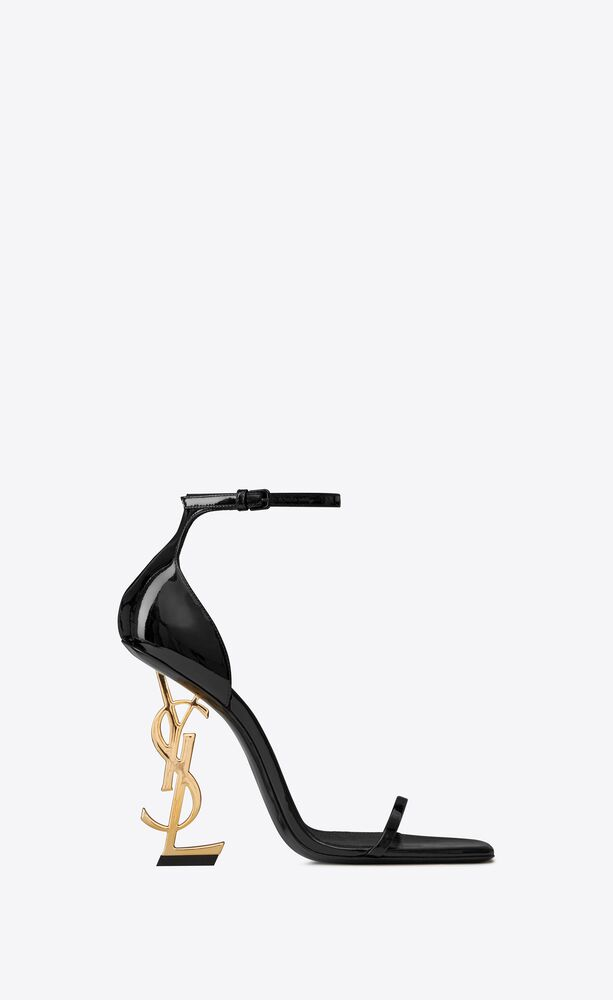
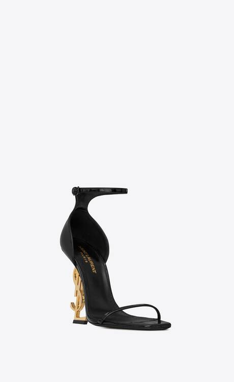

Sandali in pelle verniciata con logo Opyum 110
Prezzo: 1.200 €
Colore: Nero
COS'E' SAINT LAURENT?
Yves Saint Laurent è una delle maison di moda più importanti del XX secolo.
Fondata nel 1961 come una Maison di Haute Couture, nel 1966 ha rivoluzionato il modo in cui la moda e la società interagiscono tra loro, introducendo la creazione degli abiti di lusso su una scala più vasta rispetto alle collezioni esclusive.
Il marchio è stato fondato dal designer Yves Saint Laurent e dal suo compagno Pierre Bergé nel 1962, e si è specializzato in haute couture, prêt-à-porter, accessori in pelle e calzature.
|  |  |